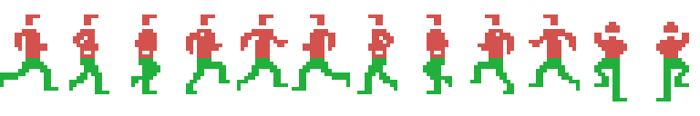

El programa principal de este juego son dos bytes: un salto a sí mismo, en 0x80F5. Lo de verdad ocurre en el gancho H.KEYI, que la BIOS llama en cada retrazado de pantalla, y que hace siempre lo mismo y en el mismo orden (0x80F7-0x8100):
B249 los dos joysticks, por el chip de sonido
B26E la fila 8 del teclado, recolocada en formato de joystick
B35B la cadena de vectores de sonido
9A6F el cuadro: la pantalla y los objetosy detrás, en 0x8103, los 0x54 bytes de 0xE26A a la memoria de vídeo 0x1B00: la tabla de atributos de sprite entera de un golpe, una vez por cuadro.
No hay cerrojo ni comprobación de reentrada, porque no hace falta: todo lo que el juego hace cabe en un cuadro.
El final del gancho no es un ret normal. Son once pop seguidos (0x810F-0x8122) que desapilan lo que la BIOS había guardado al entrar en la interrupción —el juego de registros principal, los índices y, tras el ex af,af' y el exx de 0x8118, también el alternativo—, y en medio, en 0x811A, un in a,(099h) que lee el estado del chip gráfico, que es lo que da la interrupción por atendida.
O sea que el primer pop hl se come la dirección de retorno a la BIOS y el ei / ret de 0x8123 devuelve el control directamente al programa interrumpido. El resto de la rutina de interrupción de la BIOS no llega a correr nunca.
0x9A6F, en orden:
Un sprite del MSX1 es de un solo color, así que un jugador de tres colores son tres sprites. 0x9D03 monta los otros dos a partir del principal: la misma X, 16 píxeles más arriba, y los patrones (P-0x20)+0x68 y (P-0x20)+0xB0. Los colores los escribe la rutina que monta la escena: 0x0C en 0xE2A5, 0x06 en 0xE2A9 y 0x0F en 0xE2AD. No es la única que los toca: reaparece los pone a cero para esconder al muñeco (0x8247) y los vuelve a encender a destiempo al volver (0x82D4-0x82E1), que es de dónde sale el parpadeo.
O sea que Harry mide 16x32, y no son tres capas superpuestas: los dos sprites de arriba se solapan entre ellos —dos colores en la mitad de arriba— y el principal va debajo, un color para las piernas. Sacado de la memoria de vídeo volcada y recompuesto así (tools/render_jugador.py), sale la tira de los doce fotogramas que nombran los guiones de animación del propio cartucho:

Los tiempos también son los del cartucho: andar son cinco fotogramas de tres cuadros cada uno (0x8AE1), y trepar dos de un cuadro (0x8AF9). Andar a la izquierda usa los patrones 0x44 a 0x54 (0x8AED), que son el espejo exacto de los 0x20 a 0x30: comprobado píxel a píxel sobre la tira, los cinco. Los doce son los de los guiones y nada más: los dos de estar parado, 0x34 y 0x58, no salen ahí porque no vienen de un guion, los clava a mano se_para (0x8970 y 0x896B).
Y el orden de las capas no es el que se supone: en el TMS9918 el sprite de número más bajo va delante, así que el de 0xE2A6 tapa al de 0xE2AA. Eso importa en los dos fotogramas de trepar, los únicos donde las dos capas de arriba se solapan: cinco píxeles cada uno, que con el orden al revés saldrían blancos en vez de rojos.
Y la velocidad tampoco es una impresión: anda (0x88ED) escribe 0x00C8 en el campo de velocidad, que va en 1/256 de píxel por cuadro —200/256, o sea 0,78 píxeles por cuadro— y 0xFF38 para el otro lado, que es el mismo número en negativo.
El emulador coincide con la cuenta: volcando la RAM con el juego corriendo salen tres entradas de sprite en 0xE2A2 con la misma X, la Y 109 la principal y 93 las otras dos —dieciséis líneas por encima— y los patrones 0x34, 0x7C y 0xC4, que es exactamente 0x34, (0x34-0x20)+0x68 y (0x34-0x20)+0xB0. El 0x34 de ese volcado es el de estar parado, que por eso no está en la tira.
0xE247 dice cuántos objetos hay vivos y detrás va un puntero por cada uno. De cada objeto se decrementa su contador (+0x11) y solo cuando llega a cero se recarga con su periodo (+0x10) y se le atiende (0x9A99). Así cada objeto corre a su propio ritmo sin que haya un temporizador por objeto: el hoyo se abre despacio y la boca del cocodrilo se mueve deprisa con el mismo bucle.
La estructura, leída en el recorrido de 0x9A88 y en las rutinas que la consumen:
| +0x00 a +0x05 | banderas, velocidad de 16 bits, los dos topes y la parte fraccionaria — de un eje |
| +0x06 a +0x0B | lo mismo, byte por byte, del otro eje |
| +0x0C / +0x0D | el guion de animación |
| +0x0E / +0x0F | el contador de la animación y el fotograma actual |
| +0x10 / +0x11 | el periodo del objeto y su cuenta |
| +0x12 / +0x13 | su manejador |
| +0x14 / +0x15 | dónde están sus atributos de sprite |
Que los dos bloques de movimiento son idénticos se ve sin interpretar nada: en 0x9AB3 se llama a la rutina de mover, en 0x9AB9 se le suman seis a IX, en 0x9ABB se incrementa el puntero al sprite, y en 0x9ABD se vuelve a llamar a la misma rutina.
Y la posición no está en la estructura: la parte entera vive directamente en el atributo del sprite (0x9B24) y en la estructura solo está la fracción, en +0x05. Mover un objeto es sumarle su velocidad a un número de 16 bits cuyo byte alto es lo que ve el chip gráfico.
Las banderas de cada eje, leídas en 0x9B1F:
| bit 0 | se mueve |
| bit 1 | al llegar al tope rebota, en vez de pararse (0x9B5A, con complemento a dos) |
| bit 2 | tiene topes, en +0x03 y +0x04 |
| bit 5 | está animado (0x9AEC) |
| bit 6 | tiene manejador propio (0x9AC2) |
Este cartucho salta a direcciones calculadas por todas partes, y siempre de la misma manera: el retorno se apila a mano. En 0x9AD2 se hace ld de,<vuelta> / push de / jp (hl), que es una llamada indirecta escrita a mano, y en 0x9F89 exactamente lo mismo. El trazador no llega ahí solo: las direcciones de vuelta están declaradas como puntos de entrada.
Los cuatro son:
| Qué elige | Dónde | Índice | Tabla |
|---|---|---|---|
| el manejador de un objeto | 0x9AD6 | el propio objeto, en +0x12/+0x13 | ninguna |
| el tipo de escena | 0x9F81 | 0xE225, de 0 a 7 | 0xAEB4 |
| la variante de la escena | 0xA99F | 0xE224, de 0 a 7 | 0xAE94, 0xAEA4 o 0xAEC4, según el llamante |
| qué te pasa al chocar | 0x873B | la clase de la caja, de 0 a 10 | 0x8AA0 |
El de las variantes es el interesante: recibe la tabla en HL, así que la misma rutina sirve para tres tablas distintas, y cuál se usa lo decide quien llama. La de 0xAEA4 solo la carga 0xAE2E, y solo cuando el tipo de escena es el 5.
0xE229-0xE246 son diez registros de tres bytes: la clase, la X por la izquierda y la X por la derecha. Las escriben las rutinas de escena al montar la pantalla, y las recorren 0x84EF, 0x8529 y 0x8589 con la X del jugador más ocho, o sea con su centro.
Las siete primeras son de la superficie y las de 0xE241 en adelante del subterráneo (0x853A). La clase que sale del recorrido va directa al despachador de 0x873B:
| 0 | apagada | no salta a ningún sitio |
| 1 | tronco | 0x8640: te tumba y te va restando puntos |
| 2 | suelo | 0x8751: por ahí se cae al subterráneo |
| 3 | charca | 0x8361: te hundes |
| 4 | cocodrilo | 0x8361: el mismo sitio |
| 5 | liana | 0x8162: te agarras |
| 6 | mata | 0x8221 |
| 7 | — | apunta a 0x874B, y no la escribe nadie |
| 8 | tesoro | 0x878C: te lo llevas |
| 9 | mata | 0x8221 |
| 10 | rebote | 0x85EF: inviertes la marcha y retrocedes tres pasos. No es la escalera |
Las clases 2, 3 y 4 además empujan al jugador de lado para sacarlo de la caja (0x8555-0x8578). Lo que se ajusta es su X, que es el campo +0x01 del atributo de sprite; la Y no la toca nadie ahí.
La escena en la que estás es el contenido de 0xE222, un registro de desplazamiento realimentado de 8 bits. 0xB68F lo avanza y 0xB69F lo retrocede con la función inversa exacta, así que salir de una pantalla por la izquierda deshace lo que la derecha hizo. Los ocho bits se reparten enteros: los 6-7 el decorado (0x9F91), los 3-5 el tipo de escena (0x9EFB) y los 0-2 la variante (0x9EEF).
El detalle completo, con el porqué de que sean exactamente 255 pantallas, está en Hallazgos.
0x9EE6 es la única vía por la que se monta una pantalla, y cambiar 0xE222 por las bravas no repinta nada. Lo que hace es leer del registro el decorado, el tipo y la variante, y a partir de ahí:
inc hl seguidos— y detrás van registros de cuatro bytes con la posición dentro de la tabla de nombres y el número de casilla. Con eso se pintan la columna de la escalera, las franjas del suelo y los objetos de 3x2 que hay a la derecha.Los tramos de suelo llevan un truco que ahorra dos bytes por tramo: el byte del layout es a la vez desplazamiento dentro de la tabla, longitud y avance de memoria de vídeo (0x8DA7). Cada tramo copia de tabla+N a tabla+2N.
0xB249 lee los dos puertos de joystick por el chip de sonido y los deja en 0xE05F y 0xE061 —invertidos con un cpl en 0xB257, porque el chip los entrega al revés—. Y 0xB26E coge la fila 8 del teclado, la de la barra y los cursores, y la recoloca bit a bit hasta que queda en el mismo formato: tres rotaciones y un and 0x1F en 0xB28F dejan bit 0 arriba, bit 1 abajo, bit 2 izquierda, bit 3 derecha y bit 4 el disparo.
Como las dos fuentes acaban en el mismo sitio y con la misma forma, el resto del juego no sabe cuál estás usando. Y la demo se aprovecha de eso: le escribe a 0xE05F la entrada grabada y ya está (0x9A7E).
0xE20E-0xE21B es una copia de los registros 0 a 13 del chip de sonido, y 0xB37B la vuelca entera con un bucle de outd que cuenta de 13 a 0, una vez por cuadro y en cuanto los vectores han terminado de tocarla. Fuera de esa rutina solo se escribe el puerto 0xA1 en 0xB24F y 0xB261, y no para sonar: es el registro 15, con el que el lector de mandos elige puerto de joystick.
Encima de eso van cuatro vectores en 0xE1E6-0xE1ED. Pedir un sonido es llamar a 0xB32E con un número de 0 a 10; la tabla de 0xB393 —once registros de tres bytes [ranura][puntero]— dice en qué ranura se instala y con qué rutina, y la ranura fija el canal. Cada cuadro, 0xB35B llama a lo que haya instalado en las tres primeras (0xB360-0xB37A).
Hay dos motores de sonido y tres efectos escritos a mano. El de 0xB3F0 lee guiones de ocho bytes y barre a la vez el tono y el volumen, con parte fraccionaria en 0xE1FC de la que solo sale el byte alto (0xB471); el de 0xB5EA lee guiones de cuatro bytes y deja cada nota quieta hasta la siguiente. Los tres que no llevan guion —0xB49F, 0xB4E6 y 0xB52E— tienen el barrido metido en el propio código: 19 cuadros subiendo el periodo de 0x14 en 0x14, tres cuadros bajándolo de 0x7F en 0x7F —o de 0x80, porque el sbc hl,bc de 0xB528 se lleva el acarreo y nadie lo limpia antes— y un único cuadro de ruido.
No hay ningún dibujo de liana en el cartucho. En cada paso, 0xA471 traza una recta de 16 puntos sobre un mapa de bits de 0x40 bytes en la RAM (0xE18A) y lo sube a la memoria de vídeo como patrón de sprite (0xA594). La inclinación sale de la tabla de 0xA61A —33 registros de cuatro bytes— indexada por la fase del balanceo, 0xE1CB, que va y viene entre 1 y 0x20 (0xA5EF).
Mientras vas colgado, tu X la manda la liana (0xA5F9), y soltarse es no tener el bit de «abajo» pulsado (0x81A7).
En 0x87E9 empieza el salto, y el paso se guarda en +0x17 de la estructura del jugador. En el aire (0x8820), ese número cuenta de 0x1F a 0 y se usa como índice en la curva de 0x8AB6, que se lee del final al principio: un 0xFF sube un píxel, un 0x01 baja uno y un 0x00 deja la altura donde está (0x8835). No hay velocidad vertical en ninguna parte; hay una tabla, en 0x8AB6.
Girarse en el aire solo se puede en los tres primeros pasos (0x8896), y al hacerlo se recupera el avance perdido al cambiar de sentido (0x88C3).